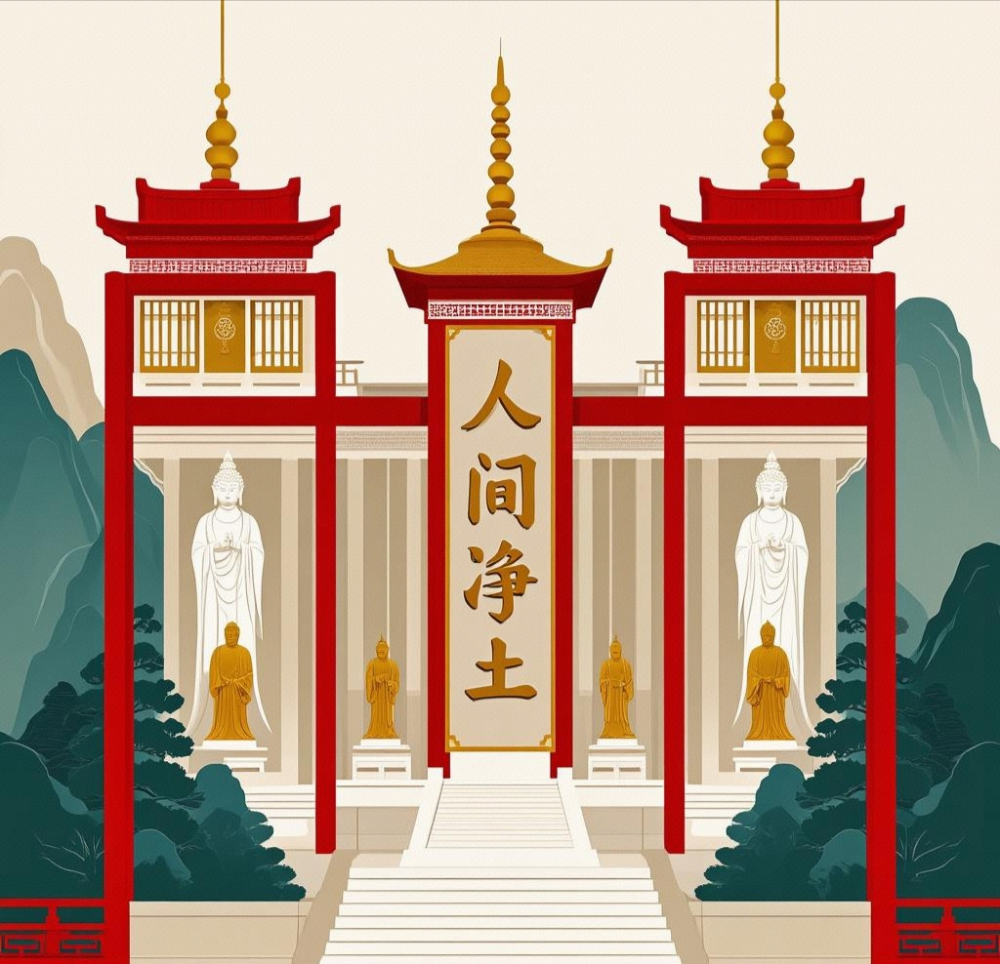
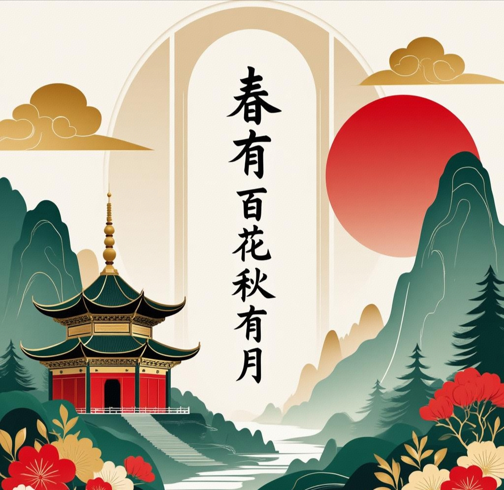

金普寺简介
金普寺坐落于台北群山环抱之中，始建于唐代，迄今已有千余年历史。古刹依山而建，殿宇层叠，松柏苍翠，晨钟暮鼓与山间清泉相和，自古便有"人间净土"之称。寺院主体沿袭唐宋建筑风骨，大雄宝殿飞檐翘角，供奉释迦牟尼佛金身，两侧十八罗汉栩栩如生，观音殿内白玉观音悲悯垂目，地藏殿经声不绝，彰显"地狱不空，誓不成佛"之大愿。
本寺历来注重禅修实证，传承临济宗/曹洞宗法脉，历代高僧辈出，藏经阁珍藏明版《大藏经》及历代高僧手抄经卷。寺内千年银杏、古井"洗心泉"、宋代石塔皆为珍贵文物。每日早晚课诵、朔望日诵戒、四季禅七为常住修行根本，每月举办佛学讲座、抄经共修，每年浴佛节、盂兰盆会等法会接引十方信众。
寺院秉持"平常心是道"之训，以农禅并重、学修一体为家风，僧众躬耕茶园菜畦，践行"一日不作，一日不食"之古德遗风。诚邀有缘人暂离尘嚣，于此品禅茶、听松风，体悟"春有百花秋有月"的禅意人生。